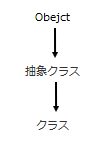
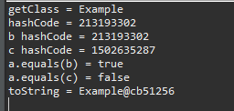
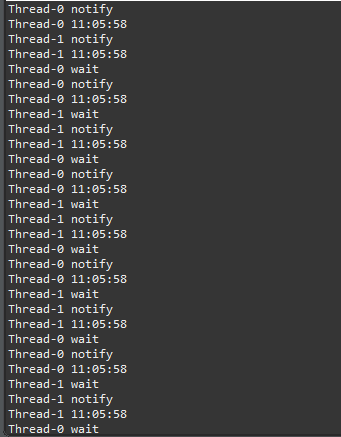
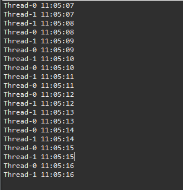

[Java] 25. Objectクラス(notify、waitの使い方)
こんにちは。明月です。
この投稿はJavaのObjectクラス(notify、waitの使い方)に関する説明です。
以前の投稿で再定義(override)に関して説明した時に、hashCodeとequals、toStringに関して説明したことがあります。
link - [Java] 11. StringのhashCodeとequals、そしてtoStringの再定義(override)
Javaの最小の単位がクラスになっています。つまり、実行関数のmain関数だけを作ろうと思ってもクラスを作ってその中でstatic void mainで実行関数を作成します。
その最小単位のクラスが基本的にObjectクラスを継承しています。つまり、extentsで継承をしてなくても基本的にObjectを継承していると思えばよいです。
そうなら、Javaは複数の継承ができないですが、その他のクラスを継承したら複数継承になるかと思いますが、すべてのクラスがObjectクラスを継承しているので複数継承ではなく、継承の継承になったことです。

そうならすべてのクラスがObejctクラスを継承しているのでObjectクラスに関して整理する必要があります。
Objectクラスは総11個の関数で構成しています。内部のメンバー変数はありません。
| 関数 | 説明 |
|---|---|
| public final native Class<?> getClass() | オブジェクトのクラスタイプをリターンする。 |
| public native int hashCode(); | オブジェクトのアドレスの値をハッシュ値でリターンする。 |
| public boolean equals(Object obj) | オブジェクトのアドレス値を比較して同じならtrue、違いならfalseをリターン |
| protected native Object clone() | オブジェクトをコピーする。単純なアドレス値のコピーではなくクラスのインスタンスをコピーすること。 クラスコピーのためにインタフェースCloneableを継承しなければならない。 |
| public String toString() | 現在のオブジェクトのStringをリターンする。 基本の値はgetClass().getName() + "@" + Integer.toHexString(hashCode())です。 |
| public final native void notify() | waitになったスレッドを再開する。 |
| public final native void notifyAll() | waitなったすべてのスレッドを再開する。 |
| public final void wait() | スレッドを停止する。 |
| public final native void wait(long timeoutMillis) | 設定した時間ほどスレッドを停止する。値が0の場合、notifyが呼び出すまで停止する。 |
| public final void wait(long timeoutMillis, int nanos) | 設定した時間ほどスレッドを停止する。値が0の場合、notifyが呼び出すまで停止する。 |
| protected void finalize() | GC(Garbage collection)でオブジェクトを削除すると呼び出す。Java 9以上にはもう使わない。(Deprecated) |
まず、getClassとhashCode、equals、clone、toStringに関して説明します。
public class Example implements Cloneable {
// Object cloneメソッドはアクセス修飾子がprotectedなのでpublicで再定義
public Example clone() {
try {
// キャスト変換をしてリターンする。
return (Example) super.clone();
} catch (CloneNotSupportedException e) {
// Cloneableを継承しなければCloneNotSupportedExceptionエラーが発生する。
return null;
}
}
// 実行関数
public static void main(String[] args) {
// インスタンス生成、すべてクラスはObjectを継承しているのでObjectタイプで設定することが可能。
Object a = new Example();
// getClassはReflectionで使えるClass<?>タイプでリターンんする。そのClassタイプはHeapに宣言されたインスタンスのクラスタイプだ。
System.out.println("getClass = " + a.getClass().getName());
// アドレス値がhash codeでリターンする。
System.out.println("hashCode = " + a.hashCode());
// これはアドレス値をコピー
Example b = (Example)a;
// これはインスタンスをコピー
Example c = b.clone();
// bのhash codeはaのhash codeと同じ
System.out.println("b hashCode = " + b.hashCode());
// cのhash codeはcloneをしたのでhash codeが違う。
System.out.println("c hashCode = " + c.hashCode());
// aとbは同じクラスか？
System.out.println("a.equals(b) = " + a.equals(b));
// aとcは同じクラスか？
System.out.println("a.equals(c) = " + a.equals(c));
// toStringはgetClass().getName() + "@" + Integer.toHexString(hashCode())
System.out.println("toString = " + a.toString());
}
}

ここで注意することはequalsと演算子==はhashCodeの値を確認します。つまり、クラスの中のデータがデータが同じでも、生成したインスタンスが違いならfalseをリターンします。
参考にStringの場合はhashCodeが再定義しているのでhashCode関数は必ずメモリアドレス値ではありません。つまり、hashCode関数を再定義すると別の値をリターンする関数になります。
次はnotifyとwaitの機能です。
以前スレッドに関して説明したことがあります。
link - [Java] 22.スレッド(Thread)を使う方法
link - [Java] 24. Javaの同期化(Synchronized)とデッドロック(Deadlock)
個のスレッド環境で値を同期化する時にsynchronizedを使います。でもこの同期化する時にもっと細かく運用する時があります。
import java.text.DateFormat;
import java.text.SimpleDateFormat;
import java.util.Date;
public class Example implements Runnable {
// デートフォマート
private DateFormat format = new SimpleDateFormat("hh:MM:ss");
// print同期化関数
public synchronized void print() {
try {
// コンソールに現在の時間を出力
System.out.println(Thread.currentThread().getName() + " " + format.format(new Date()));
// waitをすれば他のsynchronizedのロックが解ける。
// つまり、synchronized内部でwaitをしましたが、synchronizedでロックに掛けることではなく、ロック解除になる状況になる。
super.wait();
// コンソール出力
System.out.println(Thread.currentThread().getName() + " wait");
} catch (InterruptedException e) {
// TODO Auto-generated catch block
e.printStackTrace();
}
}
// 実行
@Override
public void run() {
// 繰り返す
for (int i = 0; i < 10; i++) {
// 同期化領域
synchronized (this) {
// コンソール出力
System.out.println(Thread.currentThread().getName() + " notify ");
// notifyを呼び出す。
notify();
}
// print関数を呼び出す。
print();
}
}
// 実行関数
public static void main(String[] args) {
Example a = new Example();
// 二つのスレッドにaインスタンスを実行する。
new Thread(a).start();
new Thread(a).start();
try {
// 最後はwait状況で終わるので
Thread.sleep(2000);
synchronized (a) {
// すべてのスレッドを再開して終了する。
a.notifyAll();
}
} catch (Throwable e) {
e.printStackTrace();
}
}
}

上の例をみれば二つのスレッドが順番に呼び出すことを確認できます。
先にThread1から先にnotifyしてprint関数を呼び出してコンソール出力します。そしてsynchronizedスタック領域の中でwaitを呼び出します。参考にnotifyとwaitはsynchronizedのスタック領域の中で使う関数です。
その間に、Thread2はforのsynchronized(this)が待機していますが、Thread1でwait関数を呼び出したらThread2のロックが解けます。
Thread2がsynchronized(this)に進入するとnotifyを呼び出します。
Thread1のwait関数は解けてsynchronizedのロックによって待機状況になります。また、Thread2がwait関数によってスレッドが止まったらThread1は動きます。
notifyとnotifyAllの差異はnotifyはQueueの順番で先にwaitになったスレッド一つが解けることですが、notifyAllはwaitになったすべてのスレッドが解けます。
waitで時間を設定してnotifyの呼び出しがなくても時間で解けることができます。
import java.text.DateFormat;
import java.text.SimpleDateFormat;
import java.util.Date;
public class Example implements Runnable {
// デートフォマート
private DateFormat format = new SimpleDateFormat("hh:MM:ss");
// print同期化関数
public synchronized void print() {
try {
// コンソールに現在の時間を出力
System.out.println(Thread.currentThread().getName() + " " + format.format(new Date()));
// waitをすれば他のsynchronizedのロックが解ける。
// つまり、synchronized内部でwaitをしましたが、synchronizedでロックに掛けることではなく、ロック解除になる状況になる。
// 待機時間を入れればnotifyを呼び出さなくても設定時間後でスレッドは解ける。
super.wait(1000);
// コンソール出力
System.out.println(Thread.currentThread().getName() + " wait");
} catch (InterruptedException e) {
// TODO Auto-generated catch block
e.printStackTrace();
}
}
// 実行
@Override
public void run() {
// 繰り返す
for (int i = 0; i < 10; i++) {
// print関数呼び出す。
print();
}
}
// 実行関数
public static void main(String[] args) {
Example a = new Example();
// 二つのスレッドにaインスタンスを実行する。
new Thread(a).start();
new Thread(a).start();
}
}

Thread.sleepと似てますが、wait関数は他の同期化に影響になる関数なので差異があります。
参考 - https://docs.oracle.com/javase/7/docs/api/java/lang/Object.html
ここまでJavaのObjectクラス(notify、waitの使い方)に関する説明でした。
ご不明なところや間違いところがあればコメントしてください。
- [Java] 32. Reflection機能を使う方法(Annotation編)2019/09/24 00:19:25
- [Java] 31. Reflection機能を使う方法(Variable編)2019/09/20 22:34:40
- [Java] 30. Reflection機能を使う方法(Method編)2019/09/19 20:20:10
- [Java] 29. Reflection機能を使う方法(Class編)2019/09/18 20:02:14
- [Java] 28. 文字タイプ(CharacterSet)とエンディアン(endian)で変換する方法2019/09/17 20:22:02
- [Java] 27. ネットワーク通信(Socket)をする方法2019/09/16 23:42:46
- [Java] 26. ファイル(IO)を扱う方法(ファイル作成、ファイル修正、アクセス日付変更とIOをclose(リソース返却)する理由、Closableインタフェース)2019/09/13 20:03:58
- [Java] 25. Objectクラス(notify、waitの使い方)2019/09/13 00:58:31
- [Java] 24. Javaの同期化(Synchronized)とデッドロック(Deadlock)2019/09/11 23:06:09
- [Java] 23. スレッドプール(Threadpool)を使う方法2019/09/10 21:55:36
- [Java] 22.スレッド(Thread)を使う方法2019/09/06 22:30:49
- [Java] 21. アノテーション(Annotation)を使う方法2019/09/05 22:58:20
- [Java] 20. iterator(for-each)とStream APIを使う方法2019/09/04 20:11:28
- [Java] 19. ラムダ(Lambda)を使う方法2019/09/03 20:37:14
- [Java] 18. 匿名クラス(Anonymous class)とクロージャ(closure)2019/09/02 20:30:34
- [Design pattern] 3-3. コマンドパターン(Command pattern)2021/11/05 17:01:42
- [Window] apache-tomcatでロードバランシング(Load balancing)する方法とセッションクラスタリング（セッション共有）2021/11/05 16:58:45
- [Window] Apacheでmod_jkとmod_proxyの差異、apacheでtomcatのwebsocketのプロキシフォーワードする方法2021/11/05 16:55:05
- [PHP] Apache環境の同じホスト中でPHPとJava(Servlet)を同時に起動、運用する方法2021/11/05 16:52:04
- [C#] 61. ウィンドウフォーム(Window form)でスレッド(Thread)を使い方、クロススレッド問題解決2021/11/04 19:29:51
- [Design pattern] 3-2. 責任の連鎖パターン(Chain of responsibility pattern)2021/11/04 19:27:58
- [Design pattern] 3-1. ストラテジーパターン(Strategy pattern)2021/11/03 18:38:52
- [C#] 60. ウィンドウフォーム(Window form)のイベント設定する方法2021/11/02 21:18:08
- [Design pattern] 2-7. ファサードパターン(Facade pattern)2021/11/02 19:32:31
- [Design pattern] 2-6. プロキシパターン(Proxy pattern)2021/11/01 19:42:44
- [Design pattern] 2-5. フライウェイトパターン(Flyweight pattern)2021/10/29 19:48:27
- [C#] 59. ウィンドウフォーム(Window form)にコントロール(Control)を使い方法2021/10/29 19:45:43
- [Design pattern] 2-4. デコレーターパターン(Decorator pattern)2021/10/28 20:11:13
- [C#] 58. ウィンドウフォーム(Window form)を作成する方法、そしてウィンドウメッセージとキュー2021/10/27 20:35:44
- [Design pattern] 2-3. ブリッジパターン(Bridge pattern)2021/10/27 20:32:21